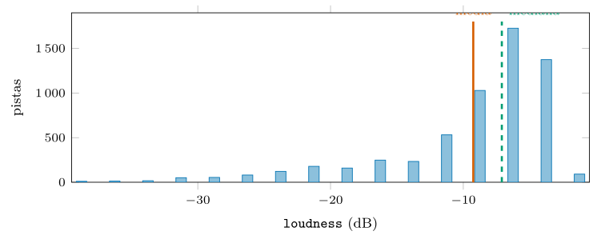
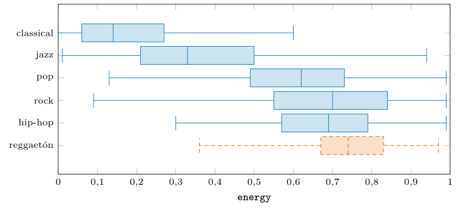
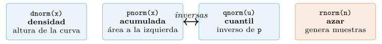
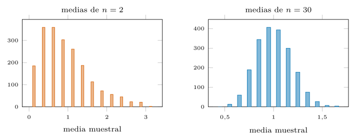
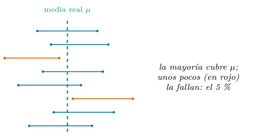
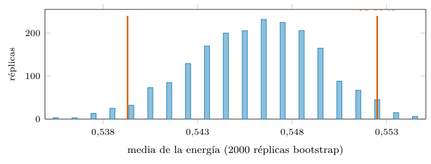
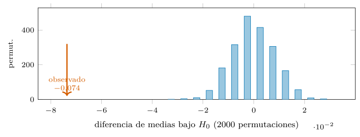

Capítulo 11. Estadística descriptiva, probabilidad e inferencia
▶ Ejecutar este capítulo en Binder
La primera vez que se abre, Binder construye el entorno en la nube (unos 10-20 min); verás una pantalla de progreso. Después queda en caché y abre en segundos. Si parece que no responde, espera a que termine de construirse o vuelve a intentarlo.
Llegamos al terreno para el que R fue diseñado. A diferencia de casi todos los lenguajes de programación, R no lo crearon informáticos para programar en general y luego lo adaptaron a los datos: lo crearon dos estadísticos, Ross Ihaka y Robert Gentleman, para hacer estadística (Ihaka y Gentleman 1996), heredando el lenguaje S de los laboratorios Bell. Eso se nota en cada rincón: el NA de primera clase del cap. 2, el vector como unidad, la fórmula y ~ x como notación de modelo, y —lo que nos ocupa aquí— un arsenal de estadística que en otros lenguajes exige bibliotecas y en R viene de fábrica. Los contrastes con nombre —la \(t\) de Student, la de Wilcoxon, el análisis de la varianza, la \(\chi^2\)— son funciones base; las distribuciones, un juego de cuatro letras; el remuestreo, unas líneas. Aquí R juega en casa.
El capítulo cierra el arco que abrieron los anteriores. Aprendimos a leer datos (cap. 5), a estructurarlos (cap. 8), a escalarlos (cap. 9) y a validarlos (cap. 10); ahora los interrogamos con rigor. El recorrido va de lo descriptivo a lo inferencial. Arranca resumiendo una variable en unos pocos números que la retraten (§11.1); sigue con la probabilidad como lengua de lo incierto y su catálogo de distribuciones (§11.2); cruza el puente que une el azar con la muestra, los dos teoremas límite (§11.3); aprende a estimar sin fingir precisión, pasando del punto al intervalo (§11.4); descubre el bootstrap, que mide lo incierto a golpe de remuestreo (§11.5); formaliza el escepticismo en el contraste de hipótesis, con la permutación como procedimiento madre (§11.6); desarma las trampas que engendran hallazgos falsos (§11.7); y remata con un integrador que interroga al catálogo con método. Como siempre, cada cifra se ejecutó en R —y como el azar de R no es el de ningún otro lenguaje, las cifras aleatorias son las de este código, con semilla declarada—.
Describir: centro, dispersión y forma
Antes de inferir hay que mirar, y mirar una variable es resumirla en tres preguntas: dónde está su centro, cuánto se dispersa y qué forma tiene. La estadística descriptiva es ese arte de comprimir muchos números en unos pocos que los representen, y aunque parece el peldaño más humilde de la disciplina, es donde se comete el primer error o se detecta el primer problema. Un resumen mal elegido —una media donde tocaba una mediana, un rango donde tocaba un IQR— falsea la imagen de los datos antes de que empiece cualquier inferencia, y un resumen bien elegido a menudo hace innecesaria la inferencia, porque la respuesta ya salta a la vista. Trabajamos con la rebanada de seis géneros del cap. 10 —5 916 pistas— y con su rasgo de energía. El centro tiene dos medidas rivales: la media, que reparte por igual, y la mediana, que parte en dos. La dispersión, otras tantas: la desviación típica, que promedia distancias al cuadrado, y sus versiones robustas, la desviación absoluta mediana (MAD) y el rango intercuartílico (IQR) del cap. 10. La dispersión importa tanto como el centro, y a menudo más: dos géneros pueden compartir energía media y diferir por completo en cuán consistentes son —uno con todas sus pistas parecidas, otro repartido de lo suave a lo furioso—, y esa diferencia de variabilidad es a veces lo interesante. Un promedio sin su dispersión es como una temperatura media anual sin decir si el clima es templado o de extremos: el mismo número esconde realidades opuestas. Por eso ninguna descripción se limita al centro; siempre lo acompaña de cuánto se aparta la gente de él.
x <- musica$energy
mean(x) # 0.546 median(x) # 0.590
sd(x) # 0.2585 mad(x) # 0.2772 IQR(x) # 0.406
quantile(x, c(.05, .25, .5, .75, .95))
#> 5% 25% 50% 75% 95%
#> 0.063 0.346 0.590 0.752 0.896La desviación típica merece un inciso, porque su definición —la raíz de la media de las distancias al cuadrado— sorprende a quien la ve por primera vez: ¿por qué elevar al cuadrado en vez de tomar el valor absoluto? Hay razones prácticas (el cuadrado es derivable, lo que facilita la matemática) y una razón profunda: la varianza (el cuadrado de la desviación típica) es aditiva —la varianza de una suma de variables independientes es la suma de sus varianzas—, una propiedad que el valor absoluto no tiene y sobre la que se construye media estadística, empezando por el \(\sigma/\sqrt{n}\) del error estándar. El precio es que el cuadrado da más peso a los valores lejanos, y por eso la desviación típica —como la media— es sensible a los atípicos; ahí es donde la MAD, robusta, la releva. Elegir entre una y otra es la misma decisión que entre media y mediana, aplicada a la dispersión.
La forma la capturan dos números más: la asimetría (skewness), que mide si una cola es más larga que la otra, y la curtosis, el peso de las colas frente a una normal. Para la energía, la asimetría es \(-0{,}46\) —cola izquierda algo más larga— y la curtosis de exceso \(-0{,}86\) —colas más ligeras que la normal, una distribución achatada—. R no trae estas dos en base (son un descuido histórico), pero se calculan en una línea a partir de los momentos:
asimetria <- mean((x - mean(x))^3) / sd(x)^3 # -0.463
curtosis <- mean((x - mean(x))^4) / sd(x)^4 - 3 # -0.856 (exceso sobre normal)El resumen de todo esto de un vistazo lo da summary() —los cinco números de Tukey (mínimo, tres cuartiles, máximo) más la media—, y su versión visual, el diagrama de caja (boxplot) del cap. 12, que dibuja esos cinco números y marca los atípicos. Antes de cualquier inferencia, ese resumen contesta las tres preguntas —centro, dispersión, forma— y avisa de sorpresas: un mínimo imposible, una cola inesperada, una media muy lejos de la mediana. Describir no es un trámite previo al análisis serio; es donde se detectan la mitad de los problemas que, ignorados, arruinarían la inferencia posterior. Y hay una razón histórica para que la descriptiva parezca «lo fácil» y la inferencia «lo serio»: durante mucho tiempo, describir era todo lo que se podía hacer sin ordenadores —contar, promediar, tabular—, y la inferencia, con su aparato de probabilidad, era el summum de la sofisticación. Hoy la balanza se ha invertido en la práctica: la inferencia es una función de una línea, y lo difícil —lo que distingue al buen analista— es la mirada descriptiva, saber qué resumen pedir, qué gráfico hacer, qué anomalía perseguir. La estadística descriptiva bien hecha es un arte de atención, y ninguna función lo automatiza; por eso este libro vuelve una y otra vez a «mira los datos primero».
Media o mediana: cuándo cada una
La elección entre media y mediana no es de gusto: la decide la forma. En una distribución simétrica coinciden; en una sesgada, la media se va hacia la cola y la mediana se queda con el grueso (figura 11.1). El sonido de las pistas —loudness, en decibelios— lo ilustra: su distribución está muy sesgada a la izquierda (unas pocas pistas muy silenciosas estiran la cola), y por eso la media (\(-9{,}25\) dB) queda más baja que la mediana (\(-7{,}10\) dB). El caso clásico de este fenómeno es el sueldo: en casi cualquier país, el sueldo medio es bastante mayor que el mediano, porque unos pocos sueldos altísimos tiran de la media hacia arriba, y por eso «el sueldo medio subió» puede ser cierto mientras la mayoría de la gente gana menos que antes —la media la movieron los de arriba—. Quien informa de la media de una variable sesgada, a sabiendas de que la mediana cuenta otra historia, elige el número que le conviene; la honradez exige dar la mediana, o las dos, y decir que difieren. Es un ejemplo de cómo una decisión estadística en apariencia técnica —qué medida del centro— tiene consecuencias políticas y comunicativas muy reales. ¿Cuál informa mejor del «sonido típico»? La mediana, porque la media la arrastran los casos extremos. La regla: para una variable sesgada, la mediana describe el centro; la media describe el promedio, que no es lo mismo, y solo coincide con lo típico cuando la distribución es simétrica.

Comparar grupos de un vistazo: el diagrama de caja
Cuando la variable se reparte en grupos —la energía por género— el mejor resumen visual es el diagrama de caja (boxplot), que dibuja los cinco números de cada grupo: la caja va del primer al tercer cuartil (el 50 % central), la línea de dentro es la mediana, y los bigotes alcanzan el resto (figura 11.2). De un golpe de vista se lee todo lo que importa: dónde está cada género, cuánto se dispersa y cómo se solapan. La clásica ocupa la banda baja (mediana 0,14, muy compacta), el reggaetón la alta (0,74, también estrecha), y el jazz queda en medio con más dispersión. Comparar centros, dispersiones y solapamientos con una sola imagen es lo que hace del boxplot la herramienta descriptiva por excelencia para grupos —y el preludio natural del contraste que vendrá después: si las cajas apenas se solapan, la diferencia será clara; si se pisan, habrá que medir con cuidado—.

Dos variables: covarianza y correlación
Describir una variable es el principio; casi siempre interesa la relación entre dos. La covarianza mide si dos variables se mueven juntas, pero su magnitud depende de las unidades y no se interpreta sola; la correlación la estandariza a \([-1, 1]\), y ese número sí habla: \(+1\) es relación lineal perfecta creciente, \(-1\) decreciente, \(0\) ninguna relación lineal.
cor(musica$energy, musica$loudness) # 0.847 energia y volumen juntos
cor(musica$energy, musica$acousticness) # -0.826 energia/acustica opuestos
cor(musica$energy, musica$loudness, method = "spearman") # 0.852 (rangos)Energía y sonoridad correlacionan a \(0{,}85\) —lo enérgico suena fuerte, sin sorpresa— y energía y acústica a \(-0{,}83\) —lo acústico es lo contrario de lo eléctrico—. El signo dice la dirección; el valor absoluto, la fuerza; y el cuadrado, \(r^2\), tiene una lectura útil: es la fracción de la varianza de una variable que la otra «explica» linealmente. Un \(r\) de \(0{,}85\) da \(r^2 \approx 0{,}72\): el volumen da cuenta del 72 % de la variación de energía, un vínculo estrechísimo. Esa traducción de la correlación a «varianza explicada» reaparecerá en la regresión de los capítulos de modelado, donde es la medida central de ajuste; conviene, pues, familiarizarse ya con ella. Dos cautelas de por vida. La primera: la correlación de Pearson solo ve relaciones lineales; una relación fuerte pero curva puede dar correlación cero, y por eso conviene mirar el diagrama de dispersión (cap. 12) antes de fiarse del número, o usar la de Spearman, que mide por rangos y capta cualquier relación monótona. La segunda, la más repetida y la más ignorada: correlación no es causalidad. Que dos cosas se muevan juntas no dice que una cause la otra; pueden compartir una causa común, o ser coincidencia. Ninguna estadística de este capítulo establece causa —eso exige diseño experimental o supuestos fuertes—, y olvidarlo es la raíz de más conclusiones falsas que cualquier error de cálculo.
Probabilidad: el idioma de la incertidumbre
Describir una muestra es contar lo que hay; inferir es hablar de lo que podría haber, y para eso hace falta el idioma de la probabilidad. Toda la inferencia que sigue —intervalos, contrastes, bootstrap— es, en el fondo, razonamiento sobre lo que el azar puede y no puede producir, y ese razonamiento necesita un vocabulario para el azar. Ese vocabulario son las distribuciones. Una distribución es el modelo matemático de cómo se reparte una cantidad incierta: la normal para errores que se acumulan, la binomial para conteos de éxitos, la de Poisson para sucesos raros, la \(t\) para medias de muestras pequeñas. No hay que conocerlas todas de memoria —hay decenas—; basta entender que cada una modela un mecanismo de azar concreto, y que R las trata a todas con la misma interfaz, de modo que aprender una es aprenderlas todas. R trata cada distribución con cuatro funciones, nombradas con un prefijo y la raíz de la distribución (figura 11.3): d para la densidad (o masa), p para la acumulada (la probabilidad hasta un punto), q para el cuantil (el inverso de la acumulada) y r para generar valores al azar. Para la normal, dnorm, pnorm, qnorm, rnorm:
dnorm(0) # 0.3989 altura de la densidad en el centro
pnorm(1.96) # 0.975 P(Z < 1.96): el area a la izquierda
qnorm(0.975) # 1.96 el cuantil que deja el 97.5 % por debajo
pnorm(1.96) - pnorm(-1.96) # 0.95 la famosa regla del 95 % (+-1.96 sigma)
set.seed(11); rnorm(3) # -0.591 0.027 -1.517 tres valores al azarEse cuarteto es uniforme para todas las distribuciones: cambiando la raíz se pasa a la binomial (dbinom, pbinom…), la de Poisson (*pois), la \(t\) de Student (*t), la \(\chi^2\) (*chisq) o la \(F\) (*f). Quien aprende el patrón una vez lo tiene para todo el catálogo de distribuciones, y con él puede responder cualquier pregunta de probabilidad sin tablas: la probabilidad de un intervalo es una resta de p, un valor crítico es un q, una simulación es una r. Esa coherencia —de nuevo, herencia del diseño estadístico de R— convierte la probabilidad en algo operativo, no en un formulario. Merece la pena detenerse en lo que esto sustituye. Hasta no hace tanto, resolver un problema de probabilidad exigía una tabla: al final de todo manual de estadística había páginas de valores de la normal, la \(t\) y la \(\chi^2\), y buscar un \(p\)-valor era interpolar en una cuadrícula impresa. Esas tablas —que generaciones de estudiantes sufrieron— eran un parche para la falta de cómputo: aproximaban lo que hoy pnorm calcula exacto al instante. Que la probabilidad haya pasado de un ejercicio de búsqueda en tablas a una función de una línea no es un detalle de comodidad: cambia lo que se puede hacer, porque libera para explorar —¿y si el umbral fuera otro?, ¿y si la distribución fuera esta?— lo que antes, con tablas, era prohibitivamente lento. La fluidez es, también, una forma de comprensión.
Las distribuciones discretas —para conteos, no para medidas continuas— usan el mismo cuarteto, con la d dando la probabilidad de un valor exacto (la masa) en vez de una densidad. La binomial cuenta éxitos en \(n\) intentos independientes; la de Poisson, sucesos raros en un intervalo:
dbinom(3, size = 10, prob = 0.3) # 0.267 P(exactamente 3 exitos de 10)
pbinom(2, 10, 0.3) # 0.383 P(2 o menos)
dpois(5, lambda = 3) # 0.101 P(exactamente 5 sucesos, media 3)Cada distribución tiene su esperanza (el valor medio a largo plazo) y su varianza (su dispersión), que para la binomial son \(np\) y \(np(1-p)\). No hace falta recordarlas: se comprueban simulando con la r y midiendo, que es como este libro prefiere convencerse. Para la binomial de arriba, \(E[X] = 3\) y \(\operatorname{Var}[X] = 2{,}1\), y una simulación de cien mil ensayos devuelve media \(3{,}00\) y varianza \(2{,}12\): la teoría y el experimento coinciden, como debe ser. La utilidad práctica es directa —¿cuántas pistas explícitas cabe esperar en una muestra de 100, si el 10,9 % de la rebanada lo es? Unas once, con la binomial diciendo también cuánto puede variar ese número—. Entender qué distribución modela cada fenómeno es, además, la mitad del trabajo de un análisis: contar sucesos raros pide Poisson; contar éxitos de un número fijo de intentos, binomial; medir tiempos entre sucesos, exponencial; sumar muchos efectos, normal. Elegir mal la distribución —tratar conteos como si fueran continuos, por ejemplo— sesga la inferencia desde el principio, por muy bien que se ejecuten los cálculos posteriores. La distribución es el supuesto más fundamental de un modelo, y el que menos se examina; conviene preguntarse siempre «¿qué mecanismo de azar genera estos datos?» antes de elegir la herramienta que los analiza.
La normal merece atención aparte porque es la reina: aparece como modelo de tantos fenómenos (por el teorema central del límite) que conviene conocer su famosa regla del 68-95-99,7: en una normal, el 68 % de los valores cae a menos de una desviación típica de la media, el 95 % a menos de dos, el 99,7 % a menos de tres. Esa regla convierte la desviación típica en una vara intuitiva —«a dos sigmas está casi todo»— y es el origen del 1,96 de los intervalos del 95 %. Pero es una regla de la normal, no de cualquier variable: aplicada a la energía, que no es normal, falla —cae el 62 % a una sigma en vez del 68 %, y el 98 % a dos en vez del 95 %—. Comprobar la regla sobre los datos propios es, de hecho, una forma rápida de ver cuánto se apartan de la normal, y un recordatorio de que la normal es un modelo útil, no una ley que los datos deban obedecer.
De la regla del 68-95-99,7 nace una operación omnipresente: la estandarización. Al restar la media y dividir por la desviación típica, cualquier variable se convierte en puntuaciones \(z\) —cuántas desviaciones típicas se aleja cada valor de su media—, que comparten escala y son comparables entre variables de unidades distintas. La función scale() lo hace de una vez; un \(z\) de \(+2\) significa «dos sigmas por encima de lo normal», sea la variable un tempo o un sueldo. Esa vara común es la que permite decir que un valor es «extremo» sin depender de las unidades, y la que subyace al \(z\) robusto de atípicos del cap. 10 y a la normalización de rasgos del cap. 10 para los modelos. Estandarizar es traducir todo al mismo idioma —el de las desviaciones típicas—, y ese idioma es el de la normal.

norm, binom, pois, t, chisq, f…) y cuatro prefijos: d densidad, p acumulada, q cuantil (inverso de p) y r muestras al azar. Aprendido el patrón para la normal, sirve para todas: la probabilidad, el valor crítico y la simulación son la misma idea con distinta letra.Del azar a la muestra: los dos teoremas que fundan la inferencia
Aquí está la bisagra entre describir e inferir. Casi nunca observamos la población entera —todas las canciones que existen—; observamos una muestra —las 5 916 que tenemos— y queremos hablar de la población a partir de ella. El puente lo tienden dos teoremas, y ambos se pueden ver simulando en R, que es la mejor forma de creerlos.
Pero antes de los teoremas, una advertencia que ninguno de ellos cubre: todo esto supone que la muestra es representativa de la población de la que se quiere hablar. Si la muestra está sesgada —si el catálogo de Spotify sobrerrepresenta ciertos géneros o épocas—, ninguna cantidad de datos lo arregla: los teoremas límite hacen converger la media de la muestra sesgada, no la de la población real. Es el error más caro y el menos estadístico de todos, porque no se ve en los números: una muestra sesgada da intervalos estrechos y \(p\)-valores minúsculos, con toda la apariencia de rigor, alrededor de la respuesta equivocada. Aumentar \(n\) reduce la varianza, no el sesgo. Por eso la primera pregunta ante cualquier inferencia no es «¿cuántos datos hay?» sino «¿de dónde salieron y a quién representan?» —una pregunta de diseño, anterior a toda fórmula, que decide si el edificio se levanta sobre roca o sobre arena—.
La ley de los grandes números
La primera promesa es de convergencia: a más datos, la media muestral se acerca a la de la población. Tomando muestras cada vez mayores de la energía y midiendo cuánto varían sus medias:
set.seed(2026)
pob <- musica$energy; mu <- mean(pob) # 0.5460 la "poblacion"
for (n in c(10, 100, 1000, 5000)) {
medias <- replicate(200, mean(sample(pob, n, replace = TRUE)))
cat(n, round(sd(medias), 4), "\n")
}
#> 10 0.0823 la media de 10 varia mucho
#> 100 0.0255
#> 1000 0.0084
#> 5000 0.0035 la de 5000, poquisimoLa media de una muestra grande es más fiable que la de una pequeña, y la mejora sigue una ley precisa: la desviación de la media muestral —su error estándar— se reduce con la raíz del tamaño, \(\sigma/\sqrt{n}\). Cuadruplicar la muestra solo divide el error entre dos; de ahí que la precisión sea cara. La ley de los grandes números es la promesa que hace posible la estadística entera: garantiza que, con datos suficientes, la muestra se parece a la población, y por tanto que lo aprendido de la primera vale para la segunda. Sin ella, no habría razón para creer que una encuesta a mil personas dice algo de un país de millones. Pero la promesa tiene letra pequeña, y es la del párrafo del sesgo: la ley hace converger la media de la muestra que se tomó, y si esa muestra no representa a la población, converge a la respuesta equivocada con una seguridad que engaña. Los grandes números son una garantía sobre la varianza, no sobre la verdad; darlos por lo segundo es el error que ni todo el \(\sqrt{n}\) del mundo corrige. Ese \(\sqrt{n}\) recorrerá todo el capítulo: es el que fija el ancho de los intervalos y la potencia de los contrastes.
Conviene no confundir dos desviaciones que se parecen en el nombre y difieren en todo lo demás. La desviación típica (\(\sigma\)) mide cuánto varían los datos —cuán dispersa está la energía de una pista a otra— y no cambia al recoger más datos: es una propiedad de la población. El error estándar (\(\sigma/\sqrt{n}\)) mide cuánto varía un estadístico —cuánto puede fallar nuestra estimación de la media— y sí encoge con \(n\): es una propiedad de la estimación. Reportar una como la otra es un error común y grave: una media de \(0{,}55 \pm 0{,}26\) (desviación típica) dice que las pistas varían mucho; una media de \(0{,}55 \pm 0{,}003\) (error estándar) dice que la conocemos con precisión. Ambas cosas son ciertas a la vez, y significan lo contrario; el símbolo \(\pm\) sin decir cuál de las dos es esconde justo la información que importa.
El teorema central del límite
La segunda promesa es más asombrosa, y es la que hace posible casi toda la inferencia clásica: la media de una muestra se distribuye de forma normal, aunque la población no lo sea, si la muestra es suficientemente grande. Partamos de una población deliberadamente torcida —una exponencial, con asimetría \(+2{,}0\)— y miremos la forma de la media muestral al crecer \(n\) (figura 11.4):
set.seed(7)
pob <- rexp(1e5) # poblacion muy sesgada (asimetria 2.0)
for (n in c(2, 10, 30, 100)) {
medias <- replicate(2000, mean(sample(pob, n)))
cat(n, round(mean((medias-mean(medias))^3) / sd(medias)^3, 2), "\n")
}
#> 2 1.30 con n=2, la media aun hereda la asimetria
#> 10 0.66
#> 30 0.46
#> 100 0.20 con n=100, la media es casi simetrica: normalLa asimetría de la media muestral se desvanece al crecer \(n\): lo torcido se endereza. Es un resultado casi mágico —la normalidad emerge de cualquier población, sin pedirle nada— y es el fundamento de que podamos usar la normal y la \(t\) para construir intervalos y contrastes sobre medias, aunque los datos originales no sean normales. De paso, el teorema explica por qué la distribución normal aparece por todas partes en la naturaleza: cualquier magnitud que sea la suma de muchos efectos pequeños e independientes —la altura como suma de genes y nutrición, el error de una medida como suma de mil imprecisiones— tiende a ser normal, precisamente por el mismo argumento. La campana de Gauss no es una casualidad estética; es la firma de la agregación, y verla en unos datos sugiere que detrás hay muchas causas menores sumándose, mientras que su ausencia —una distribución muy sesgada, como el sonido o la riqueza— delata que domina algún mecanismo multiplicativo o de cola pesada. La forma de una distribución cuenta la historia de cómo se generó. Con la salvedad honesta: «suficientemente grande» depende de cuán torcida esté la población; para una exponencial, \(n \approx 30\) ya endereza bastante, pero para colas más pesadas hace falta más, y ahí es donde el bootstrap de la §11.5 releva a la fórmula. Y hay un límite absoluto que conviene conocer: el teorema exige que la población tenga varianza finita. Para distribuciones de cola tan pesada que la varianza es infinita —la de Cauchy es el ejemplo de manual, y algunos fenómenos financieros o de redes se le acercan—, el teorema central del límite no se cumple: la media de mil valores de Cauchy es tan dispersa como uno solo, porque los extremos dominan siempre. Son casos raros, pero recordarlos vacuna contra el exceso de fe: el teorema es poderosísimo, no universal, y ante colas sospechosamente pesadas conviene desconfiar de la media —y usar la mediana, que sí se porta bien— antes que aplicar la fórmula a ciegas.

Estimar con honestidad: del punto al intervalo
Estimar es adivinar un número de la población —su media, su proporción, su correlación— a partir de la muestra, y es la operación más común de toda la estadística aplicada: casi cada cifra que se publica es la estimación de una cantidad que no se pudo medir entera. Un estimador es la receta que produce esa adivinanza (la media muestral estima la media poblacional), y un buen estimador tiene dos virtudes: es insesgado —no se equivoca sistemáticamente en una dirección— y eficiente —se equivoca poco—. Un detalle famoso ilustra lo primero: la varianza muestral divide entre \(n-1\), no entre \(n\), y esa corrección de Bessel —un detalle que parece capricho— es justo lo que la vuelve insesgada, porque usar la media estimada en lugar de la real consume un grado de libertad. R lo hace por defecto (var y sd dividen entre \(n-1\)), de modo que uno hereda la corrección sin pensarla; pero saber por qué está ahí es entender que un estimador no es una fórmula caída del cielo, sino una elección con propiedades que se pueden demostrar y que importan. La media muestral cumple ambas para la media poblacional; por eso es la estimación por defecto. Pero un número solo no basta.
Una estimación puntual —«la energía media es 0,546»— es una respuesta muda: no dice cuánto podría fallar. La honestidad estadística exige acompañarla de su incertidumbre, y la forma canónica es el intervalo de confianza. Para la media, el error estándar (\(\sigma/\sqrt{n}\), con \(\sigma\) estimada por la desviación muestral) y la distribución \(t\) dan el intervalo del 95 % de una llamada:
t.test(musica$energy)$conf.int
#> 0.5394 0.5526 IC 95 %: la energia media esta, con confianza 95 %, aqui
sd(x) / sqrt(length(x)) # 0.00336 el error estandarEl intervalo \([0{,}539,\ 0{,}553]\) es estrecho porque \(n\) es grande —de nuevo el \(\sqrt{n}\)—. El intervalo de confianza es, seguramente, la forma más honrada de comunicar una estimación, porque lleva la incertidumbre incorporada: en lugar de un número que finge una precisión que no tiene, ofrece un rango que dice «la verdad está por aquí, con este margen». Un titular que dijera «el paro bajó al 12 %» esconde si ese 12 es \(12 \pm 0{,}1\) o \(12 \pm 3\) —dos afirmaciones completamente distintas—; el intervalo lo hace explícito. Por eso las buenas prácticas de comunicación científica exigen intervalos, no puntos, y por eso este capítulo insiste: una estimación sin su intervalo es media verdad, la mitad cómoda. Pero su interpretación es la trampa conceptual más común de toda la estadística, y conviene decirla con cuidado. Un intervalo del 95 % no significa que haya un 95 % de probabilidad de que la media real esté dentro. La media real es un número fijo: está o no está. Lo que es del 95 % es el procedimiento: si repitiéramos el muestreo muchas veces y construyéramos un intervalo cada vez, el 95 % de esos intervalos contendría la media real. Se puede comprobar simulando (figura 11.5):
set.seed(2026)
cubre <- replicate(500, { s <- sample(pob, 100)
ci <- t.test(s)$conf.int; mu >= ci[1] && mu <= ci[2] })
mean(cubre) # 0.958 (~95.8 % de 500 IC cubren la media)De 500 intervalos, 479 atraparon la media y 21 la fallaron: el 95,8 %, justo lo prometido. La confianza vive en el método, no en un intervalo concreto —del tuyo, ya construido, solo se puede decir que salió de un procedimiento que acierta 19 de cada 20 veces—. Es una distinción sutil y se repite mal en todas partes; entenderla es media inferencia.
Dos palancas gobiernan el ancho del intervalo, y conviene conocerlas para diseñar un estudio. El nivel de confianza: pedir un 99 % en vez de un 95 % ensancha el intervalo (más seguridad, menos precisión), y a la inversa —no se puede tener toda la confianza y toda la precisión a la vez—. Y el tamaño muestral: como el error estándar cae con \(\sqrt{n}\), estrechar el intervalo a la mitad exige cuadruplicar los datos. Esa raíz es una ley económica implacable: la precisión tiene rendimientos decrecientes, y llega un punto en que más datos apenas mueven el intervalo. Saberlo evita dos errores opuestos —recoger de menos, y quedarse con un intervalo inútilmente ancho; o recoger de más, malgastando esfuerzo en una precisión que ya no aporta—. El punto justo lo fija la pregunta: cuánta precisión hace falta para decidir lo que se va a decidir, ni más ni menos.

El bootstrap: la incertidumbre por fuerza bruta
Toda la inferencia clásica de las secciones anteriores descansa en fórmulas deducidas a mano, una por estadístico, cada una con sus supuestos. Durante siglo y medio, esas deducciones fueron el corazón de la estadística: encontrar la distribución de un estadístico era un logro matemático que se publicaba con el nombre de quien lo lograba. El bootstrap dio la vuelta a ese mundo. En 1979, con los ordenadores empezando a ser accesibles, Bradley Efron propuso una idea casi provocadora: en vez de deducir cómo varía un estadístico, medirlo remuestreando. Lo que antes exigía un teorema, ahora lo hace un bucle.
El intervalo de la sección anterior salió de una fórmula que supone una forma (la normal, vía el teorema central del límite). ¿Y si el estadístico no es una media —una mediana, un cociente, una correlación— y no hay fórmula, o la población es demasiado rara para fiarse del teorema? La respuesta es una de las ideas más bellas de la estadística moderna, el bootstrap de Efron (Efron 1979; Efron y Tibshirani 1994): en lugar de suponer cómo variaría el estadístico entre muestras, simularlo remuestreando la muestra que tenemos. Se extraen muchas muestras del mismo tamaño, con reemplazo, de los datos originales; se calcula el estadístico en cada una; y la dispersión de esos valores estima directamente su incertidumbre. La muestra hace de población, y el ordenador hace el resto.
El nombre —bootstrap, «tirarse de los cordones de las botas para levantarse»— captura lo que tiene de aparente imposible: sacar información sobre la variabilidad de un estimador de la única muestra que se tiene, sin datos nuevos. Parece un truco, pero la lógica es sólida: si la muestra es representativa de la población, remuestrearla imita el proceso de tomar muestras frescas de esa población. El reemplazo es esencial —sin él, cada remuestreo sería idéntico al original—; con él, cada réplica es una versión ligeramente distinta, y esa variación entre réplicas reproduce la variación que habría entre muestras reales. No crea información de la nada: extrae la que ya estaba latente en la muestra, sobre cuánto podría haber variado. Es una de esas ideas que, una vez entendidas, parecen obvias y, sin embargo, tardaron dos siglos de estadística en aparecer, porque exigían un ordenador para ser prácticas. El bootstrap encarna, mejor que ninguna otra técnica, el cambio que la computación trajo a la estadística: durante siglo y medio, la disciplina fue una rama de la matemática, donde el progreso venía de deducir distribuciones con lápiz y papel; desde los años ochenta, es también una rama de la computación, donde el progreso viene de simular lo que antes había que deducir. R, nacido en esa transición, lleva las dos almas dentro —las fórmulas clásicas y las herramientas de remuestreo, codo con codo—, y saber cuándo usar cada una es parte de la madurez del analista: la fórmula cuando existe y es fiable, por su rapidez; la simulación cuando no, o cuando se quiere ver la incertidumbre en vez de confiar en un teorema.
El paquete infer (Bray et al. 2024) expresa el bootstrap —y toda la inferencia— con una gramática ordenada de cuatro verbos que se leen como una frase: specify la variable, generate las réplicas, calculate el estadístico. Para el intervalo de la energía media:
library(infer)
set.seed(2026)
bs <- musica |>
specify(response = energy) |>
generate(reps = 2000, type = "bootstrap") |>
calculate(stat = "mean")
get_confidence_interval(bs, level = 0.95, type = "percentile")
#> lower_ci upper_ci
#> 0.5393 0.5525 practicamente identico al de la formulaEl intervalo bootstrap \([0{,}539,\ 0{,}553]\) coincide con el de t.test hasta la tercera cifra (figura 11.6) —era de esperar, porque para una media con \(n\) grande la fórmula acierta—. La gracia del bootstrap es que el mismo código funciona para un estadístico sin fórmula: cámbiese stat = "mean" por "median", "sd" o "correlation" y el intervalo sale igual, sin tocar nada más. Donde la teoría clásica exige una deducción distinta por cada estadístico, el bootstrap ofrece un solo procedimiento para todos. Es fuerza bruta con elegancia: cambia pensamiento matemático por ciclos de procesador, un intercambio que en 2026 casi siempre compensa.
Hay una elegancia filosófica en el bootstrap que merece señalarse. La estadística clásica resolvió el problema de la incertidumbre pensando: dedujo, con siglos de matemática, la distribución exacta de cada estadístico bajo supuestos. El bootstrap lo resuelve haciendo: no deduce, remuestrea y mira. Es la diferencia entre calcular la trayectoria de una pelota con las ecuaciones de Newton y lanzarla mil veces y medir dónde cae; ambas llegan a la respuesta, pero la segunda no exige saber las ecuaciones. En un mundo con ordenadores baratos, esa segunda vía democratiza la inferencia: pone al alcance de quien no domina la teoría lo que antes era coto de especialistas. No sustituye a entender —hay que saber qué se remuestrea y por qué—, pero elimina la barrera de la deducción, y con ella buena parte del misterio que rodeaba a la estadística.
Aquí está la demostración de esa promesa. La mediana no tiene una fórmula sencilla para su error estándar —su teoría es enrevesada—; la correlación, tampoco una directa. El bootstrap las trata igual que la media, cambiando solo el stat:
set.seed(2026)
musica |> specify(response = energy) |> generate(2000, "bootstrap") |>
calculate(stat = "median") |>
get_confidence_interval(0.95, type = "percentile")
#> 0.5815 0.6020 IC de la MEDIANA, sin haber deducido ninguna formula
set.seed(2026)
musica |> specify(loudness ~ energy) |> generate(2000, "bootstrap") |>
calculate(stat = "correlation") |>
get_confidence_interval(0.95, type = "percentile")
#> 0.8413 0.8531 IC de la CORRELACION energy-loudnessDos intervalos, para dos estadísticos que en la teoría clásica exigirían dos desarrollos distintos, obtenidos con la misma tubería de cuatro verbos. Ahí está el poder del método: un solo idioma para toda la inferencia, sea cual sea el estadístico. Conviene, eso sí, no idealizarlo: el bootstrap tiene un coste —dos mil remuestreos son dos mil cálculos, y para estadísticos caros o datos enormes eso pesa— y una precisión que depende del número de réplicas (más réplicas, intervalos más estables; dos mil suele bastar, pero para colas del 1 % hacen falta más). No sustituye al pensamiento: uno debe seguir eligiendo qué estadístico estimar y qué significa. Lo que sustituye es la deducción matemática de su distribución, que era la parte difícil y especializada. En ese reparto —la máquina hace la fórmula, el humano hace el juicio— está buena parte de lo que la estadística computacional aportó al oficio: liberó al analista de deducir para que pudiera concentrarse en preguntar bien.

t.test.El contraste de hipótesis: ¿podría ser casualidad?
La pregunta inferencial por excelencia es de escepticismo: observamos una diferencia —la energía del pop parece mayor que la del rock—, ¿es real o podría ser un capricho del muestreo? El contraste de hipótesis la formaliza. Se plantea una hipótesis nula \(H_0\) —«no hay diferencia; lo observado es azar»— y se pregunta: si \(H_0\) fuera cierta, ¿con qué frecuencia el azar produciría una diferencia al menos tan grande como la que vemos? Esa frecuencia es el \(p\)-valor. Si es minúscula, el azar es una explicación inverosímil y se rechaza \(H_0\); si no, no hay caso. El umbral que separa «minúscula» de «no tanto» —el famoso \(\alpha = 0{,}05\)— es una convención, no una verdad de la naturaleza: Fisher lo propuso como cómodo, y su tiranía posterior ha hecho más daño que bien, tratando \(0{,}049\) como un descubrimiento y \(0{,}051\) como un fracaso cuando son prácticamente lo mismo. Lo sensato es informar del \(p\)-valor exacto y dejar que el lector juzgue, no convertir un continuo de evidencia en un veredicto binario por un corte arbitrario. El \(p\)-valor mide un grado de sorpresa, y los grados no tienen fronteras; el 0,05 es una raya pintada en una pendiente, útil para organizarse pero peligrosa si se toma por un precipicio.
La lógica se parece a la de un juicio, y la analogía ayuda a no confundirse. La hipótesis nula es la presunción de inocencia —«no hay efecto» hasta que se demuestre lo contrario—; los datos son las pruebas; el \(p\)-valor mide cuán sorprendentes serían esas pruebas si el acusado fuera inocente. Un \(p\) minúsculo es evidencia abrumadora contra la inocencia, y se condena (se rechaza \(H_0\)). Pero —y esto es clave— no rechazar \(H_0\) no la demuestra, igual que un veredicto de «no culpable» no proclama inocencia, solo falta de pruebas suficientes. Por eso nunca se «acepta la hipótesis nula»: no encontrar diferencia puede significar que no la hay o que faltaron datos para verla (la potencia de la §11.7). El contraste es asimétrico a propósito: protege sobre todo contra el falso positivo —condenar a un inocente, afirmar un efecto que no existe—, que es el error que la ciencia más teme. Esta asimetría refleja una elección de valores, no una verdad matemática: la ciencia decidió, hace un siglo, que es peor proclamar un descubrimiento falso que dejar pasar uno real, del mismo modo que un sistema judicial garantista prefiere absolver a un culpable que condenar a un inocente. Es una postura defendible —la literatura llena de falsos hallazgos es más dañina que la que se queda corta—, pero conviene saber que es una decisión, revisable según el contexto: en un cribado médico donde no detectar una enfermedad mata, el equilibrio se inclina al revés, y se tolera más falso positivo para no perder ningún caso real. El \(\alpha = 0{,}05\) no es sagrado; es el ajuste por defecto de una balanza que cada problema debería recalibrar.
El procedimiento general: la permutación
Hay una forma de contrastar que no supone ninguna distribución y que enseña la lógica desnuda: el test de permutación. Si el género no influyera en la energía (la \(H_0\)), entonces las etiquetas «pop» y «rock» serían intercambiables: barajarlas al azar no debería cambiar nada. Así que se barajan muchas veces, se calcula la diferencia de medias en cada barajado —esa es la distribución nula, lo que el puro azar produce— y se mira dónde cae la diferencia real (figura 11.7). Lo elegante de infer es que los cuatro verbos son los mismos para el intervalo (bootstrap), el contraste (permutación) y la estimación: solo cambia si se incluye hypothesize y qué tipo de generate. Esa uniformidad no es solo comodidad sintáctica; refleja que las tres tareas —estimar, medir la incertidumbre y contrastar— son variaciones de un mismo gesto (remuestrear y calcular), y aprenderlas como tal, en lugar de como tres temas inconexos, es entender la inferencia en vez de memorizarla. Los mismos cuatro verbos, ahora con hypothesize:
dos <- musica |> filter(track_genre %in% c("pop", "rock"))
set.seed(2026)
obs <- dos |> specify(energy ~ track_genre) |>
calculate(stat = "diff in means", order = c("pop", "rock")) # -0.0736
nulo <- dos |> specify(energy ~ track_genre) |>
hypothesize(null = "independence") |> # H0: el genero no influye
generate(reps = 2000, type = "permute") |> # barajar las etiquetas
calculate(stat = "diff in means", order = c("pop", "rock"))
get_p_value(nulo, obs, direction = "two-sided") # p < 0.001La diferencia observada (\(-0{,}074\)) queda tan lejos de la nube que el azar teje (centrada en cero, con casi todo su peso en \(\pm 0{,}03\)) que ninguna de las 2000 permutaciones la iguala: el \(p\)-valor es esencialmente cero. Un matiz de honradez sobre ese «cero»: infer avisa —«sé cauto al reportar un \(p\)-valor de 0»— porque no es un cero verdadero, sino la resolución del método: con 2000 permutaciones, lo más pequeño que se puede medir es «menos de 1 entre 2000», o sea \(p < 0{,}0005\). Reportarlo como «\(p = 0\)» afirma una imposibilidad (que el azar nunca produciría esto), cuando lo cierto es «no lo produjo en 2000 intentos». La forma correcta es «\(p < 0{,}001\)» o aumentar las réplicas si se necesita más resolución. Es un detalle pequeño, pero delata a quien entiende el método —el \(p\)-valor de una simulación tiene la precisión de la simulación, ni más— frente a quien copia el número sin pensarlo. La diferencia es real. Lo valioso del método es que no supone nada —ni normalidad, ni varianzas iguales—: solo la lógica de que, bajo \(H_0\), las etiquetas dan igual. Es el procedimiento general del que los contrastes con nombre son atajos para casos concretos.
Conviene apreciar lo que la permutación tiene de pedagógico, más allá de su utilidad. Los contrastes clásicos entregan un \(p\)-valor salido de una fórmula que, para el principiante, es una caja negra: ¿de dónde sale ese número? La permutación no tiene caja negra —barajar etiquetas y contar es tan transparente que se entiende sin matemáticas—, y sin embargo llega al mismo sitio. Ver que el \(t\) de Welch y la permutación coinciden desmitifica la fórmula: uno comprende que el \(p\)-valor siempre responde la misma pregunta —¿con qué frecuencia el azar produciría esto?—, tenga detrás una integral o un bucle. Por eso, aunque en producción se usen los clásicos por rapidez, empezar por la permutación es empezar por la idea, no por la receta. En 2026, con procesadores de sobra, la distinción entre «lo que se puede deducir» y «lo que se puede simular» se ha difuminado tanto que muchos cursos enseñan ya la inferencia por remuestreo primero, y las fórmulas después, como atajos que fueron imprescindibles cuando calcular era caro.

Los contrastes con nombre
El test de permutación es general pero pide simular; los contrastes clásicos son fórmulas cerradas para situaciones frecuentes, y en R son funciones base de una línea. Para comparar las medias de dos grupos, la \(t\) de Welch —que R usa por defecto, sin suponer varianzas iguales, la elección prudente—:
t.test(energy ~ track_genre, data = dos) # pop vs rock, t de Welch
#> t = -8.89, df = 1982, p-value < 2.2e-16 (= la permutacion)
wilcox.test(energy ~ track_genre, data = dos) # version no parametrica (rangos)
#> p-value < 2.2e-16Los tres coinciden —permutación, \(t\) de Welch y Wilcoxon—, como suele ocurrir cuando la señal es clara. Para más de dos grupos, el análisis de la varianza (aov) contrasta si algún género difiere; para dos variables categóricas, la \(\chi^2\) (chisq.test) contrasta si están asociadas:
summary(aov(energy ~ track_genre, data = musica)) # F = 1625, p < 2e-16
chisq.test(table(musica$track_genre, musica$explicit)) # X2 = 839, p < 2e-16El ANOVA tiene un límite que conviene conocer: dice que algún género difiere, pero no cuáles. Para eso están las comparaciones post-hoc, como la prueba de Tukey (TukeyHSD), que contrasta todos los pares corrigiendo ya por las múltiples comparaciones (la §11.7, aplicada de fábrica). Es la secuencia sensata: primero el ANOVA, que con un solo test pregunta si hay alguna diferencia —y solo si la hay— las comparaciones por pares para localizarla, en vez de lanzar de entrada quince tests que habría que corregir a mano.
El ANOVA confirma que la energía difiere entre los seis géneros (inevitable: la clásica promedia 0,20 y el reggaetón 0,74); la \(\chi^2\), que el lenguaje explícito depende del género (del 0 % en la clásica al 32 % en el hip-hop). La lógica de la \(\chi^2\) es la misma de todo el capítulo, aplicada a conteos: compara la tabla observada con la que cabría esperar si no hubiera asociación —si el porcentaje de explícito fuera igual en todos los géneros— y mide cuánto se aparta una de otra. Una desviación grande es improbable bajo la independencia, y el \(p\)-valor la cuantifica. Es el mismo escepticismo —¿podría el azar producir esta tabla?— que subyace al \(t\) y a la permutación, solo que sobre frecuencias en vez de medias. Reconocer esa lógica común bajo los distintos nombres es lo que convierte una colección de tests en una sola idea con variantes. Y para comparar dos proporciones —¿el pop tiene más pistas explícitas que el rock?—, la prop.test:
prop.test(c(72, 43), c(993, 1000)) # explicitas de pop vs de rock
#> p-value = 0.006 props: 7.3 % (pop) vs 4.3 % (rock): difierenDos variantes cierran el repertorio cotidiano. El contraste de una muestra —t.test(x, mu = 0.5)— pregunta si la media difiere de un valor de referencia, no de otro grupo. Y el contraste emparejado —t.test(antes, despues, paired = TRUE)— compara dos medidas de los mismos sujetos (la energía de una pista antes y después de remasterizarla, por ejemplo), y es más potente que el de dos grupos independientes porque cada sujeto es su propio control: elimina la variabilidad entre individuos. Confundir el emparejado con el independiente —tratar como grupos ajenos lo que son medidas repetidas— desperdicia esa potencia y puede cambiar la conclusión.
Que los contrastes con nombre —de medias, de varianzas, de proporciones, de asociación— sean todos funciones base, y no una biblioteca aparte, es una de las señas de identidad de R: la estadística clásica está a un test de distancia, con una interfaz uniforme (fórmula y ~ x, un objeto con p.value, conf.int y estimate) que hace intercambiables las herramientas.
¿Hace falta que los datos sean normales?
Una duda recurrente ronda todo lo anterior: los contrastes clásicos de medias «suponen normalidad», y los datos rara vez son normales. ¿Invalida eso el t.test? Casi nunca, y entender por qué cierra el capítulo. Lo que la \(t\) exige no es que los datos sean normales, sino que lo sea la media muestral, y eso —por el teorema central del límite— ocurre casi siempre con muestras razonables, sean como sean los datos. La energía no es normal, y un test formal lo confirma:
set.seed(2026)
shapiro.test(sample(musica$energy, 500))$p.value # 3.5e-11: rechaza normalidadEl test de Shapiro-Wilk rechaza de plano que la energía sea normal —y hace bien, no lo es—. Pero eso no descalifica al t.test sobre su media, porque la media sí es normal por el TCL. Hay incluso una ironía en usar el test de normalidad para decidir: con muestras grandes rechaza cualquier desviación por nimia que sea, y con muestras pequeñas no detecta ni las groseras —es decir, avisa cuando menos importa y calla cuando más—. La práctica sensata no es un test de normalidad, sino un vistazo a la forma (un histograma, un gráfico Q-Q del cap. 12) y, ante la duda, recurrir a lo que no supone normalidad: el Wilcoxon o el bootstrap. La normalidad de los datos es una preocupación casi siempre exagerada; la de la media, garantizada por el TCL, es la que de verdad sostiene la inferencia.
Qué contraste usar
Con tantas pruebas sobre la mesa, la pregunta práctica es cuál toca. La respuesta la fija el tipo de datos y de comparación (tabla 11.1). El patrón se aprende una vez y sirve siempre: identifica qué comparas —medias, proporciones, asociación— y cuántos grupos, y la función aparece sola. Y ante la duda sobre supuestos, el test de permutación o el bootstrap sirven siempre, porque no suponen ninguna distribución: son la red de seguridad universal cuando los clásicos incomodan.
| Pregunta | Clásico (base R) | Sin supuestos |
|---|---|---|
| ¿La media difiere de un valor? | t.test(x, mu=) |
bootstrap |
| ¿Difieren dos medias? | t.test(y ~ g) (Welch) |
permutación |
| Ídem, colas pesadas / ordinal | wilcox.test |
permutación |
| ¿Difieren \(>2\) medias? | aov |
permutación |
| ¿Difieren dos proporciones? | prop.test |
permutación |
| ¿Dos categóricas asociadas? | chisq.test |
permutación |
| ¿Dos numéricas correlacionadas? | cor.test |
bootstrap |
El tamaño del efecto: significativo no es grande
Un \(p\)-valor dice si un efecto es detectable, no si es grande. Son preguntas distintas, y confundirlas es el error que la §11.7 desmenuza. La magnitud la mide el tamaño del efecto —una medida estandarizada, comparable entre estudios, de cuánto difiere lo que se compara—, y el paquete effectsize (Ben-Shachar et al. 2024) lo da para cada contraste: la \(d\) de Cohen para dos medias, la \(\eta^2\) para el ANOVA, el coeficiente de correlación para una asociación. La ventaja de estandarizarlo es que se interpreta sin conocer las unidades: una \(d\) de 0,2 es un efecto pequeño, 0,5 moderado, 0,8 grande, sea la variable un tempo, un sueldo o una presión arterial —las guías de Cohen dan esos umbrales orientativos, que conviene tomar como brújula, no como ley—.
library(effectsize)
cohens_d(energy ~ track_genre, data = dos) # d = -0.40 (efecto moderado)
eta_squared(aov(energy ~ track_genre, data = musica)) # eta2 = 0.58La \(d\) de Cohen de \(-0{,}40\) dice que pop y rock difieren en 0,4 desviaciones típicas —un efecto moderado, ni trivial ni enorme—; la \(\eta^2\) de 0,58 dice que el género explica el 58 % de la varianza de la energía —un efecto grande, coherente con lo obvio de que la clásica y el reggaetón suenan distinto—. Un contraste completo informa siempre de las dos cosas: el \(p\)-valor (¿es real?) y el tamaño del efecto (¿es importante?). El primero sin el segundo engaña, como veremos.
Las trampas: cómo se fabrica un falso hallazgo
El contraste de hipótesis es una herramienta poderosa y, por eso mismo, peligrosa: mal usada, fabrica falsos hallazgos con toda la apariencia del rigor. Y lo inquietante es que casi nunca hace falta mala fe: las trampas de esta sección se caen solas, por entusiasmo, por prisa, por el sesgo humano a ver patrones donde solo hay ruido. El analista honrado no es el que nunca se equivoca, sino el que conoce estas trampas y monta defensas contra su propio sesgo —declarar el análisis antes, corregir por comparaciones, informar del tamaño del efecto—. Tres trampas, las tres frecuentes, las tres evitables, las tres capaces de convertir un análisis competente en un espejismo.
El p-hacking y las comparaciones múltiples
Un \(p\)-valor de 0,05 significa que, aun sin efecto real, un test de cada veinte dará «significativo» por puro azar. Luego, si se hacen muchos tests y se informa solo del que salió, se garantiza un falso positivo. Es el \(p\)-hacking, y se ve simulando veinte tests sobre puro ruido:
set.seed(11)
ps <- replicate(20, t.test(rnorm(100), rnorm(100))$p.value) # 20 tests, ruido
sum(ps < 0.05) # 2 dos "significativos"... de puro azarDos de veinte tests sobre datos sin ninguna relación salieron «significativos». Informar de ellos como hallazgos sería un fraude —consciente o no—. Y aquí acecha un malentendido que multiplica el daño: mucha gente cree que «\(p < 0{,}05\)» significa «hay un 5 % de probabilidad de que sea un falso positivo». No es así. El 5 % es la probabilidad de un \(p\) significativo si no hubiera efecto; la probabilidad de que un hallazgo concreto sea falso depende, además, de cuántas de las hipótesis que probamos eran ciertas de antemano —la tasa base—. Si se rastrean mil correlaciones esperando encontrar oro y solo diez son reales, la mayoría de los «significativos» que aparezcan serán falsos positivos, por mucho que cada uno tenga su \(p < 0{,}05\). Es la misma aritmética que hace que una prueba médica muy fiable dé, sobre una enfermedad rara, más falsos positivos que verdaderos. La lección: el \(p\)-valor no se interpreta en el vacío, sino a la luz de cuán plausible era la hipótesis antes de mirar los datos —y buscar a ciegas, sin hipótesis previa, es la receta de la falsa alarma—. La defensa es corregir por el número de comparaciones: p.adjust ajusta los \(p\)-valores al alza según cuántos tests se hicieron, por Bonferroni (conservador) o Benjamini-Hochberg (controla la tasa de falsos descubrimientos (Benjamini y Hochberg 1995)):
sum(p.adjust(ps, "bonferroni") < 0.05) # 0 ninguno sobreviveTras la corrección, los dos falsos positivos desaparecen. Las dos correcciones difieren en filosofía, y conviene elegir a conciencia. Bonferroni es conservadora: divide el umbral por el número de tests, controla la probabilidad de un solo falso positivo entre todos, y por eso, con muchos tests, se vuelve tan estricta que apenas deja pasar nada —protege del falso positivo a costa de perder hallazgos reales—. Benjamini-Hochberg es más permisiva y realista: controla la fracción esperada de falsos positivos entre los rechazados (la tasa de falsos descubrimientos), lo que en un cribado de miles de hipótesis —una expresión génica, una búsqueda de señales— es lo que de verdad importa. Para unos pocos tests bien fundamentados, Bonferroni; para un rastreo masivo exploratorio, Benjamini-Hochberg. La regla común, en cualquier caso, es de honradez elemental: si se prueban muchas hipótesis, hay que decirlo y ajustar; informar solo de la que ganó, callando las demás, es la forma estadística de mentir. El jardín de senderos que se bifurcan —probar variantes hasta que una funcione— es la misma trampa disfrazada, y por eso el análisis serio se declara antes de ver los datos.
Significativo no es importante
La segunda trampa es más sutil porque no hay engaño, solo malentendido. Con una muestra grande, cualquier diferencia por minúscula que sea se vuelve «significativa», porque el \(p\)-valor mide detectabilidad y \(n\) grande detecta lo trivial. La correlación entre el tempo y la duración de las pistas lo enseña:
cor.test(musica$tempo, musica$duration_ms)
#> cor = -0.026, p-value = 0.0497 "significativo" (p < 0.05)...Una correlación de \(-0{,}026\) es, a efectos prácticos, cero: el tempo no dice nada de la duración —su \(r^2\) es del 0,07 %, es decir, el tempo «explica» siete diezmilésimas de la variación de la duración—. Y sin embargo el \(p\)-valor la declara «significativa», solo porque hay 5 916 pistas. Con 50 pistas, la misma correlación no pasaría el filtro. Este fenómeno tiene una consecuencia perversa en la era de los datos masivos: cuando \(n\) es de millones, todo correlaciona significativamente con todo, porque el ruido, agregado en cantidades enormes, produce señales detectables aunque insignificantes. En ese régimen el \(p\)-valor pierde casi todo su valor como filtro —siempre dice «sí»— y el tamaño del efecto pasa a ser el único criterio que discrimina. Es una inversión que a muchos analistas formados con muestras pequeñas les cuesta asumir: con datos grandes, la pregunta ya no es «¿es significativo?» —lo será— sino «¿es lo bastante grande para importar?», que es la que el tamaño del efecto responde. La lección es la del apartado anterior, al revés: el \(p\)-valor no mide la importancia. Un resultado «significativo» con un tamaño del efecto ridículo es estadísticamente cierto y prácticamente inútil, y presentarlo como un hallazgo —«¡hemos encontrado una relación significativa!»— es engañar con la verdad. Por eso el tamaño del efecto no es opcional: es lo que distingue un descubrimiento de una anécdota estadística.
La raíz del malentendido es semántica: «significativo», en estadística, no quiere decir «importante» —su sentido coloquial— sino «difícilmente atribuible al azar», que es otra cosa. La palabra, elegida por Fisher hace un siglo, ha causado un siglo de confusión, porque el público —y a veces el propio analista— la lee en su acepción corriente. Un titular que dice «un estudio encuentra una relación significativa entre X e Y» casi siempre se malinterpreta como «una relación importante», cuando puede ser una correlación de 0,02 sobre un millón de personas. La higiene mental consiste en traducir siempre «significativo» por «detectable» y preguntar acto seguido «¿y grande?». Quien mantenga esa disciplina —separar la existencia del efecto de su magnitud— habrá desarmado la trampa más extendida de toda la estadística aplicada.
La potencia: la otra cara del contraste
La tercera trampa es el reverso: no ver un efecto que sí existe, por falta de datos. La potencia de un contraste es la probabilidad de detectar un efecto real; depende del tamaño del efecto, de \(n\) y de \(\alpha\), y R la calcula con power.t.test:
power.t.test(delta = 0.1, sd = sd(musica$energy),
sig.level = 0.05, power = 0.8)$n
#> 106 hacen falta 106 pistas por grupo para detectar una diferencia de 0.1La otra cara de la potencia es el cálculo del tamaño muestral, y es donde más se nota su valor práctico. Con \(n = 1000\) por grupo, el efecto más pequeño que se detecta con potencia 0,8 es de apenas \(0{,}03\) unidades de energía —una octava parte de la desviación típica: una sensibilidad enorme, quizá excesiva, que detectará como «significativo» cualquier matiz trivial—. La relación se invierte según el propósito: para descubrir un efecto pequeño hacen falta muchos datos; para descartar que exista un efecto grande, bastan pocos. Fijar de antemano qué tamaño de efecto importa —el mínimo que cambiaría una decisión— y calcular el \(n\) que lo detecta con holgura es el diseño responsable; recoger datos «a ver qué sale» y luego lamentar que el estudio no tenía potencia es el patrón que llena la literatura de resultados no concluyentes. La potencia convierte una intuición vaga —«necesito bastantes datos»— en un número accionable antes de gastar un euro en recogerlos.
Un estudio con menos datos de los que su potencia exige está condenado: si no encuentra el efecto, no puede distinguir «no existe» de «no tenía datos para verlo». Por eso la potencia se calcula antes de recoger los datos, no después —un power analysis previo dice cuántas observaciones hacen falta para que el estudio pueda responder su pregunta—. Un «no significativo» sobre una muestra pequeña no es evidencia de ausencia; es ausencia de evidencia, que no es lo mismo.
Por qué esto importa: la crisis de la replicación
Estas trampas no son sutilezas académicas: han producido una crisis real. Buena parte de los hallazgos publicados en algunas disciplinas —psicología, biomedicina— no se replican cuando otro equipo repite el experimento, y las causas son exactamente las tres de este capítulo: \(p\)-hacking (probar hasta que algo salga), publicar solo lo significativo (el sesgo de publicación, que llena la literatura de falsos positivos y esconde los negativos) y estudios con poca potencia (que, cuando aciertan, exageran el efecto). El diagnóstico clásico de Ioannidis (2005) —«por qué la mayoría de los hallazgos publicados son falsos»— y el experimento de Simmons et al. (2011) —que fabrican un resultado absurdo pero «significativo» solo con flexibilidad de análisis— pusieron cifras al problema. La respuesta de la comunidad es de método: el prerregistro —declarar las hipótesis y el análisis antes de ver los datos, para que no haya senderos que bifurcar—, informar del tamaño del efecto y su intervalo (no solo el \(p\)-valor), calcular la potencia de antemano y compartir datos y código para que otros repliquen. Nada de eso es estadística nueva; es honradez vieja, aplicada con disciplina. Y toca de lleno a quien programa la ciencia de datos: las herramientas de este libro —semillas fijas, guiones reproducibles, la política de «medir, no proclamar» del cap. 10— son, precisamente, la infraestructura de esa honradez. Hay aquí una lección que trasciende la estadística: la reproducibilidad no es un adorno burocrático, sino la defensa más eficaz contra el autoengaño. Un análisis que otro puede repetir exactamente —con el mismo código, los mismos datos, la misma semilla— no puede esconder un \(p\)-hacking accidental ni un sendero elegido a posteriori, porque todo el camino queda a la vista. Por eso las prácticas de ingeniería de este libro y el rigor estadístico de este capítulo no son dos temas separados: son la misma cosa vista desde dos ángulos, la de producir resultados en los que uno mismo —y los demás— puedan confiar. La crisis de la replicación fue, en el fondo, una crisis de reproducibilidad, y su cura pasa tanto por la estadística como por el git commit.
Un ejemplo integrador: interrogar al catálogo con rigor
Reunamos las piezas en una pregunta real, respondida con el ciclo completo. La pregunta: ¿la música explícita es más enérgica que la limpia? No basta con comparar dos medias; hay que describir, estimar, contrastar y medir el efecto, con honestidad en cada paso.
# 1. DESCRIBIR: las dos medias y su dispersion
musica |> group_by(explicit) |>
summarise(n = n(), media = mean(energy), sd = sd(energy))
#> explicit n media sd
#> FALSE 5272 0.530 0.265 la limpia: mas variada
#> TRUE 644 0.674 0.140 la explicita: mas energica y compacta
# 2. ESTIMAR: el IC de la diferencia (no solo el punto)
t.test(energy ~ explicit, data = musica)$conf.int
# 3. CONTRASTAR: ¿podria ser azar? (Welch + permutacion coinciden)
t.test(energy ~ explicit, data = musica)$p.value
# 4. TAMAÑO DEL EFECTO: ¿es grande? (d de Cohen)
effectsize::cohens_d(energy ~ explicit, data = musica)
#> limpio: media 0.530 (n=5272) | explicito: media 0.674 (n=644)
#> IC 95 % de la diferencia: [0.130, 0.156] p < 2e-16 d = -0.56La respuesta completa, en una frase: la música explícita es más enérgica que la limpia (0,674 frente a 0,530), una diferencia de unas 0,14 unidades —intervalo del 95 % \([0{,}13,\ 0{,}16]\)—, casi con certeza no debida al azar (\(p < 0{,}001\)) y de magnitud moderada (\(d = -0{,}56\), más de media desviación típica). Esa frase dice las cuatro cosas —dirección, incertidumbre, significación y tamaño— sin exagerar ninguna, y es todo lo que la estadística puede honradamente afirmar. Nótese lo que no dice: que ser explícito cause más energía —podría ser el género, el estilo, la época—; la correlación no es causa, y el diseño observacional del catálogo no permite ir más allá.
El flujo es la moraleja del capítulo. Describir da las dos medias y avisa de si la comparación tiene sentido (¿son los grupos comparables en tamaño?). Estimar sustituye el «son distintas» por un intervalo que dice cuánto distintas, con su incertidumbre. Contrastar responde si la diferencia sobrevive al escepticismo del azar. Y el tamaño del efecto responde la pregunta que el \(p\)-valor nunca contesta: si la diferencia, real o no, es lo bastante grande para importar. Conviene notar que las cuatro respuestas se dirigen a interlocutores distintos, y por eso hacen falta las cuatro: el \(p\)-valor convence al escéptico de que no es azar; el intervalo informa al que decide de cuánto margen hay; el tamaño del efecto le dice al práctico si vale la pena actuar; y la descripción le recuerda a todos de qué datos salió. Un informe con solo el \(p\)-valor responde al escéptico y deja a los demás a oscuras —y el que decide y el práctico son, casi siempre, quienes de verdad usarán el resultado—. Solo con las cuatro respuestas —centro, intervalo, \(p\)-valor y efecto— se ha interrogado a los datos con rigor; con una sola, se ha empezado a engañarse. Repárese en que el flujo es acumulativo, no una lista de la que elegir: cada paso presupone el anterior y añade una capa de honradez. Saltar directo al \(p\)-valor —el reflejo del principiante— es como dar un veredicto sin describir el caso ni medir el daño: puede acertar, pero no se sostiene. Y el orden importa además por una razón práctica: describir y dibujar antes de contrastar revela los problemas —un atípico, un grupo minúsculo, una distribución imposible— que, ignorados, invalidarían el contraste posterior. La estadística mal hecha empieza por el final; la bien hecha recorre el camino entero, y por eso tarda más y convence más. La estadística no es una máquina de producir \(p\)-valores: es una disciplina para cuantificar cuánto sabemos y cuánto no, y decirlo sin exagerar en ninguna dirección.
Síntesis: cuantificar la incertidumbre
El capítulo tenía un objetivo: pasar de describir lo que hay a inferir lo que significa, sin perder la honradez por el camino. Describir es el primer gesto —centro, dispersión, forma—, y ya ahí la elección entre media y mediana es una decisión, no un automatismo. La probabilidad, con su familia de cuatro letras, da el idioma para hablar de lo incierto. Y los dos teoremas límite tienden el puente de la muestra a la población, tan sólido que sobre él se levantan los intervalos de confianza —que miden la incertidumbre de una estimación— y el bootstrap —que la mide por fuerza bruta cuando no hay fórmula—. Nótese cómo todas estas piezas encajan en una sola idea: cuantificar cuánto podría variar lo que observamos si el azar hubiera repartido las cartas de otro modo. El error estándar, el intervalo, el \(p\)-valor, la distribución bootstrap y la nula de permutación son cinco respuestas a la misma pregunta —¿cuánto de esto es señal y cuánto azar?—, formuladas para estadísticos y situaciones distintas. Quien vea esa unidad debajo de la variedad de nombres tiene la inferencia entendida; quien memorice cada test por separado, solo la tiene aprendida.
El contraste de hipótesis responde la pregunta del escéptico —¿podría ser azar?—, con la permutación como procedimiento general y los contrastes con nombre como atajos, todos a un test de distancia en R. Pero su poder es su peligro: el \(p\)-valor mide detectabilidad, no importancia, y confundirlos —o hacer muchos tests y contar solo el que ganó, o quedarse corto de datos— fabrica falsos hallazgos con cara de rigor. De ahí la disciplina que cierra el capítulo: informar siempre del tamaño del efecto junto al \(p\)-valor, corregir por comparaciones múltiples, y declarar el análisis antes de ver los datos. R pone la estadística al alcance de una línea; usarla con honradez es cosa de quien escribe esa línea. Hay una simetría bonita en cómo el capítulo empezó y termina: abrió diciendo que R lo diseñaron estadísticos, y cierra mostrando que esa herencia es una responsabilidad tanto como una comodidad. Que un contraste cueste una línea no lo hace trivial; lo hace peligroso en manos que no entienden lo que la línea afirma. El lenguaje regala la sintaxis; la semántica —qué significa el número, qué no puede concluirse de él— la pone quien lo usa, y ese es el conocimiento que ninguna actualización de paquete traerá gratis. Con los datos ya descritos y su incertidumbre cuantificada, el próximo capítulo los pone en imágenes: la visualización, donde R —con la gramática de gráficos— vuelve a jugar en casa.
El vocabulario de la inferencia
El capítulo ha introducido un vocabulario denso que conviene fijar, porque los términos se confunden con facilidad y su precisión es media inferencia:
Población y muestra: el todo del que se quiere hablar y la parte que se observa. La inferencia va de la segunda a la primera, y solo si la muestra la representa.
Parámetro y estadístico: una cantidad de la población (la media real \(\mu\), fija y desconocida) y su estimación desde la muestra (la media muestral, aleatoria y calculable). El contraste habla de parámetros con estadísticos.
Desviación típica y error estándar: cuánto varían los datos y cuánto varía un estadístico. La primera no cambia con \(n\); el segundo cae con \(\sqrt{n}\).
Intervalo de confianza: un rango construido por un procedimiento que acierta el 95 % de las veces. La confianza es del método, no del intervalo concreto.
Hipótesis nula (\(H_0\)): la presunción de «no hay efecto» que el contraste intenta refutar. No se «acepta»; se rechaza o no se rechaza.
\(p\)-valor: la probabilidad de los datos observados (o más extremos) si \(H_0\) fuera cierta. No es la probabilidad de que \(H_0\) sea cierta.
Significación (\(\alpha\)) y potencia: la probabilidad de un falso positivo (rechazar \(H_0\) siendo cierta) y la de detectar un efecto real.
Tamaño del efecto: la magnitud estandarizada de lo que se compara (la \(d\) de Cohen, la \(\eta^2\), el \(r\)). Responde «¿es grande?», que el \(p\)-valor no contesta.
Bootstrap y permutación: medir la incertidumbre y la distribución nula por remuestreo, sin suponer distribución. La red de seguridad universal.
Dominar estos nueve términos —y las distinciones que encierran— es dominar la inferencia, porque cada error frecuente del final del capítulo es, en el fondo, confundir dos de ellos: la desviación típica con el error estándar, el \(p\)-valor con la probabilidad de la hipótesis, la significación con la importancia. La precisión del lenguaje no es pedantería aquí; es la diferencia entre entender y creer que se entiende.
Diez reglas de inferencia honrada
El capítulo se resume en un decálogo, más de actitud que de técnica, que conviene tener a la vista al analizar:
Describe y dibuja antes de contrastar. La mitad de los errores se ven en un histograma; ningún \(p\)-valor sustituye a mirar los datos.
Elige el centro según la forma. Media para lo simétrico, mediana para lo sesgado; que difieran es un dato, no un descuido.
Nunca un punto sin su intervalo. Una estimación sin incertidumbre es una afirmación sin pruebas de su precisión.
El intervalo es del procedimiento, no del parámetro. \(\mu\) es fija; lo aleatorio es el intervalo.
Informa del tamaño del efecto con cada \(p\)-valor. Detectable no es importante; solo las dos cosas juntas dicen algo.
Corrige por comparaciones múltiples. Muchos tests garantizan un falso positivo; declara cuántos hiciste y ajusta.
«No significativo» no es «no hay efecto». Puede ser falta de potencia; calcúlala antes, no después.
Ante la duda sobre supuestos, remuestrea. Bootstrap y permutación no suponen distribución y casi siempre valen.
Declara el análisis antes de ver los datos. El prerregistro cierra el jardín de senderos que se bifurcan.
Correlación no es causa. Ninguna prueba de este capítulo establece causa; decirlo es tan importante como calcularla.
Preguntas que todo el mundo hace
Algunas dudas se repiten en cuanto uno empieza a inferir de verdad; contestarlas de una vez ahorra confusión.
¿Qué \(\alpha\) uso, 0,05 o 0,01? Depende del coste de equivocarse. En exploración, 0,05 está bien; donde un falso positivo es caro (un fármaco, una decisión irreversible), 0,01 o menos. Y siempre: informa del \(p\) exacto, no solo de si cruza el umbral.
¿\(t\) de Student o de Welch? Welch (la de R por defecto) casi siempre: no supone varianzas iguales y apenas pierde potencia cuando sí lo son. La de Student clásica es un caso particular que rara vez conviene forzar.
¿Paramétrico o no paramétrico? Si la muestra es grande, el paramétrico (\(t\), ANOVA) vale por el teorema central del límite aunque los datos no sean normales. Si es pequeña y sospechosa, el no paramétrico (Wilcoxon) o el bootstrap.
¿Cuántas réplicas de bootstrap o permutación? Dos mil para un intervalo o un \(p\)-valor ordinarios; diez mil si necesitas precisión en las colas. Más réplicas, resultado más estable, a cambio de tiempo.
¿Puedo usar un test de una cola? Solo si fijaste la dirección antes de ver los datos. Elegirla después de mirar es \(p\)-hacking, por más que tiente su mayor potencia.
Mi \(p\) salió 0,06. ¿Y ahora? No es «no hay efecto»; es «la evidencia no alcanza el umbral que fijaste». Informa del \(p\), del intervalo y del tamaño del efecto, y deja que el lector juzgue. No lo redondees a la baja ni recojas más datos hasta que baje: eso es hacer trampa.
¿La correlación prueba que X causa Y? Nunca. Para causa hacen falta un experimento (asignación al azar) o supuestos fuertes que el dato observacional no da.
¿Bootstrap o fórmula clásica? Para una media con muestra grande, dan lo mismo; usa la fórmula, que es instantánea. Para estadísticos raros (mediana, cociente, correlación) o muestras pequeñas y torcidas, el bootstrap, que no supone forma.
¿Mi muestra es suficientemente grande? No hay número mágico; depende del efecto que buscas. Calcula la potencia antes: te dirá el \(n\) que necesitas para detectar el efecto mínimo que te importaría.
Encontré algo interesante explorando. ¿Puedo publicarlo? Como hipótesis, sí; como hallazgo confirmado, no —lo descubriste mirando, así que está contaminado por el jardín de senderos—. Confírmalo en datos nuevos, o prerregístralo y repite.
¿Frecuentista o bayesiano? Para el trabajo cotidiano, frecuentista (lo de este capítulo): es el estándar y basta. El bayesiano brilla cuando hay conocimiento previo que incorporar o cuando la pregunta es literalmente «¿qué probabilidad hay de que la hipótesis sea cierta?». No compiten: responden preguntas distintas.
Mis datos no son normales. ¿Qué hago? Casi siempre, nada: si la muestra es grande, el \(t\) y el ANOVA valen igual por el teorema central del límite. Si es pequeña y muy torcida, Wilcoxon o bootstrap. El test de normalidad rara vez ayuda a decidir.
¿Debo quitar los atípicos antes de contrastar? Solo si son errores (imposibles, del cap. 10). Un atípico real es información; quitarlo para que el test «salga» es hacer trampa. Ante la duda, usa métodos robustos, no la tijera.
Errores frecuentes en inferencia
Informar la media de una variable sesgada. La media la arrastra la cola; para lo típico de una distribución asimétrica, la mediana. Que media y mediana difieran es un aviso de asimetría, no un detalle.
Interpretar mal el intervalo de confianza. El 95 % es del procedimiento, no de un intervalo concreto: no hay «un 95 % de probabilidad de que \(\mu\) esté dentro». \(\mu\) es fija; el intervalo es lo aleatorio.
Confundir significativo con importante. Con \(n\) grande, lo trivial se vuelve significativo. Informar siempre del tamaño del efecto junto al \(p\)-valor.
\(p\)-hacking. Probar muchas hipótesis y contar solo la que salió es fabricar un falso positivo. Corregir con
p.adjusty declarar cuántos tests se hicieron.Leer «no significativo» como «no hay efecto». Puede ser falta de potencia. Ausencia de evidencia no es evidencia de ausencia; calcular la potencia antes de concluir.
Suponer normalidad sin mirar. Muchos contrastes la asumen; para colas pesadas o muestras pequeñas, usar versiones robustas (
wilcox.test) o el bootstrap, que no la suponen.Usar la \(t\) de Student con varianzas desiguales. La \(t\) de Welch (la que R usa por defecto) no exige varianzas iguales; forzar la clásica es un riesgo gratuito.
Reportar solo el \(p\)-valor. Un contraste honrado da la estimación, su intervalo, el \(p\)-valor y el tamaño del efecto; las cuatro cosas, no una.
Olvidar la semilla en las simulaciones. Bootstrap y permutación usan azar; sin
set.seedlos resultados no se reproducen (cap. 7).Tratar el \(p\)-valor como probabilidad de que \(H_0\) sea cierta. No lo es: es la probabilidad de los datos (o más extremos) si \(H_0\) fuera cierta, que es otra cosa (Wasserstein y Lazar 2016).
Confundir emparejado con independiente. Medidas repetidas de los mismos sujetos piden
paired = TRUE; tratarlas como grupos ajenos desperdicia potencia y puede cambiar la conclusión.Concluir causa de una correlación. Ninguna prueba de este capítulo establece causalidad; para eso hacen falta experimentos o supuestos que el diseño observacional no da.
Ignorar el sesgo de la muestra. Aumentar \(n\) reduce la varianza, no el sesgo: una muestra no representativa da intervalos estrechos alrededor de la respuesta equivocada.
Reportar «\(p = 0\)». Ninguna simulación da un cero verdadero; su resolución es \(1/\text{réplicas}\). Escribir «\(p < 0{,}001\)» o subir las réplicas, no «\(p = 0\)».
Elegir la cola después de mirar. Decidir «una cola» al ver la dirección de los datos infla la significación: la dirección se fija antes, o se usan dos colas.
Confundir la desviación típica con el error estándar. Un \(\pm\) sin decir cuál de los dos es esconde justo la información que importa: dispersión del dato o precisión de la estimación.
Lecturas recomendadas
La estadística que este capítulo condensa tiene bibliotecas enteras detrás; estas lecturas son las puertas de entrada. Conviene una advertencia previa sobre cómo leerlas: la estadística se presta, como pocas disciplinas, a aprenderse mal —memorizando recetas sin la lógica que las une—, y el antídoto es buscar siempre la idea debajo de la fórmula. Los textos que se recomiendan aquí comparten esa vocación de explicar el porqué, no solo el cómo, y por eso valen más que cualquier manual de recetario, por completo que sea. Leer sobre estadística es, en buena medida, leer sobre epistemología aplicada: sobre qué significa saber algo a partir de datos, y hasta dónde llega ese saber. Sobre el \(p\)-valor y su interpretación —la fuente de la mitad de los errores—, la declaración de la American Statistical Association (Wasserstein y Lazar 2016) es breve, autorizada y demoledora: conviene leerla antes de escribir el primer t.test. El bootstrap, la idea que vertebra la segunda mitad del capítulo, nació en el artículo de Efron (1979) y se desarrolla en el libro de Efron y Tibshirani (1994), todavía la mejor exposición de por qué remuestrear funciona. Para las trampas del contraste, el trabajo de Simmons et al. (2011) sobre los «falsos positivos» y la flexibilidad del analista es lectura obligada —enseña, con experimentos, cómo se fabrica sin querer un hallazgo falso—, y el clásico incómodo de Ioannidis (2005) explica por qué buena parte de la literatura científica no replica. La corrección por comparaciones múltiples que controla la tasa de falsos descubrimientos es de Benjamini y Hochberg (1995), un artículo que transformó la práctica del cribado masivo en genómica y más allá, y cuya idea —controlar la fracción de falsos entre los descubrimientos, no la probabilidad de uno solo— es de las más rentables que un analista puede interiorizar. Y para la práctica en R, la documentación de infer (Bray et al. 2024) presenta su gramática de la inferencia —el mismo relato ordenado para el intervalo, el bootstrap y la permutación— y la de effectsize (Ben-Shachar et al. 2024) cubre los tamaños del efecto que ningún contraste debería omitir. Quien quiera el fundamento histórico encontrará en el trabajo seminal de Student sobre la \(t\) (Student 1908) y en el diseño de experimentos de Fisher (Fisher 1935) el origen de casi todo lo que hoy es una función de una línea; leer a Fisher es descubrir que las ideas que aquí caben en un párrafo costaron décadas de pensamiento, y que el rigor con que hoy las usamos es su legado. Hay una anécdota que vale por un tratado: el famoso experimento de Fisher con la señora que decía distinguir si el té o la leche se había servido primero en la taza —el «lady tasting tea»— es, tal cual, un test de permutación, y con él Fisher fundó de un golpe el diseño experimental moderno y la lógica del contraste. Que el ejemplo fundacional de toda la inferencia sea una taza de té recuerda que la estadística nació para responder preguntas concretas y cotidianas, no para intimidar con símbolos; y que su poder está en la lógica —¿podría la señora haber acertado por azar?—, no en la fórmula.
Una recomendación de práctica, más que de lectura. La mejor forma de interiorizar la inferencia no es memorizar fórmulas, sino simular: generar datos con un efecto conocido y comprobar que los métodos lo recuperan; generar datos sin efecto y ver con qué frecuencia el azar produce un falso positivo; variar el tamaño muestral y observar cómo se estrecha el intervalo. R hace eso trivial —replicate, las funciones r*, una semilla—, y media tarde jugando con simulaciones enseña sobre el \(p\)-valor, la potencia y la cobertura más que cualquier capítulo, este incluido. La estadística se entiende de verdad cuando se la ve fallar y acertar en experimentos que uno mismo controla, porque entonces deja de ser un conjunto de recetas y se vuelve lo que es: una teoría del azar, comprobable con el ordenador que se tiene delante.
Una última palabra sobre el papel de todo esto en la ciencia de datos. Es tentador, en la era del aprendizaje automático, ver la estadística clásica como un capítulo previo y algo anticuado, superado por modelos que predicen sin contrastar hipótesis. Sería un error. Los modelos del resto del libro se evalúan con las ideas de este capítulo —la incertidumbre de una métrica, si una mejora es real o ruido, el tamaño de un efecto—, y las decisiones que de ellos se derivan se defienden con su lógica. La inferencia no compite con la predicción: la sostiene, poniéndole números a la confianza que merece. Un modelo sin una medida honrada de su incertidumbre es tan peligroso como un \(p\)-valor sin su tamaño del efecto: una cifra segura de sí misma sobre una base que no se ha examinado. Por eso este capítulo, el más matemático del libro, es también uno de los más prácticos: enseña a no creerse los números —ni los propios— más de lo que merecen, que es la primera virtud de quien trabaja con datos y la última que se aprende.
Conviene, para terminar, situar la estadística en su justo lugar dentro del oficio. No es un tema entre otros, del que uno pueda prescindir si su trabajo «no es estadístico»: es la teoría de cuánto se puede fiar uno de una conclusión sacada de datos, y toda conclusión sacada de datos —una métrica de un modelo, el resultado de un experimento A/B, una tendencia en un panel— cae bajo su jurisdicción. Ignorarla no la desactiva; solo hace que uno cometa sus errores sin saberlo, tomando por señal lo que es ruido y por hallazgo lo que es azar. La buena noticia es que el núcleo que de verdad importa cabe en las diez reglas y los nueve términos de este capítulo, y que R lo pone al alcance sin exigir dominar la matemática que hay debajo —basta entender qué pregunta responde cada herramienta—. La mala, que esa comprensión no se descarga con un paquete: hay que construirla, y la mejor forma es la que este capítulo ha intentado modelar en cada sección —tomar un dato real, hacerle una pregunta honesta y seguir el rastro de la incertidumbre hasta el final, sin atajos ni exageraciones—.
Y una última perspectiva, mirando hacia adelante. Los capítulos que vienen construyen modelos —predicen, clasifican, agrupan—, y es fácil, entre tanto algoritmo, olvidar que un modelo es también una afirmación sobre datos, sujeta a la misma duda que una media. La precisión de un clasificador es una estimación con su intervalo; la mejora de una versión sobre otra es una diferencia que puede ser azar; la importancia de una variable es un efecto con su tamaño. Todo lo aprendido aquí seguirá aplicándose, disfrazado con otros nombres, en cada evaluación de cada modelo del resto del libro. La estadística no es el capítulo que se cierra al pasar de página: es la conciencia crítica que acompaña a todos los que siguen, recordando en cada resultado la misma pregunta —¿cuánto de esto me puedo creer?— que es, al cabo, la única que distingue el análisis riguroso del entusiasmo mal medido.
Y un cierre sobre lo que este capítulo deliberadamente no ha hecho: agotar la estadística. Se han quedado fuera continentes enteros —la regresión (que asoma en los capítulos de modelado), el análisis de series temporales, los modelos multinivel, la estadística bayesiana en profundidad, el diseño de experimentos— que llenan carreras universitarias. Lo que se ha buscado no es la exhaustividad, imposible en un capítulo, sino la alfabetización inferencial: el núcleo mínimo que permite no engañarse ni dejarse engañar con datos, y sobre el que todo lo demás se construye. Quien domine describir, estimar con un intervalo, contrastar entendiendo el \(p\)-valor y medir el tamaño del efecto tiene ya la brújula para navegar el resto —y, más importante, para reconocer cuándo un análisis ajeno, por sofisticado que parezca, ha cometido uno de los errores de este capítulo—. El resto de la estadística es profundidad; esto es la base, y la base es lo que no se puede saltar.
Termino con una nota sobre la humildad, que es la virtud que este capítulo más ha predicado sin nombrarla. Toda la maquinaria de la inferencia —los intervalos, los contrastes, los tamaños del efecto— existe para una sola cosa: impedir que nos creamos más de lo que los datos permiten. Es una tecnología contra el exceso de confianza, contra la tendencia humana a ver patrones en el ruido y a contar la historia que nos gusta. En un tiempo en que los datos se invocan para zanjar cualquier discusión —«los datos dicen…»—, saber cuánto no dicen es una forma de honradez cívica, no solo profesional. El analista que ha interiorizado este capítulo desconfía de sus propias conclusiones tanto como de las ajenas, acompaña cada cifra de su margen de error, y resiste la tentación de la certeza fácil que un \(p\)-valor por debajo de 0,05 parece conceder. Esa desconfianza disciplinada —ni el cinismo que todo lo niega ni la credulidad que todo lo acepta, sino la medida exacta de la duda— es, quizá, lo más valioso que la estadística tiene para ofrecer a quien trabaja con datos, y lo que la hace, mucho más que un conjunto de fórmulas, una educación del juicio. Y es, no por casualidad, la misma virtud que recorre todo el libro: la del cap. 10, que exige medir en vez de proclamar; la de la reproducibilidad, que somete cada número a la prueba de poder rehacerlo; la del código bien escrito, que no esconde lo que hace. Rigor estadístico, disciplina de ingeniería y honradez intelectual son, al final, tres nombres de lo mismo: el compromiso de no afirmar más de lo que se puede sostener. Con ese compromiso interiorizado —y con las herramientas de R para ejercerlo sin fricción—, el lector está preparado no solo para el siguiente capítulo, sino para lo único que de verdad importa en este oficio: producir, a partir de datos, conclusiones en las que se pueda confiar. Y ese es, al final, el hilo que ata este capítulo con el que viene: describir con rigor, inferir con humildad y —ahora— comunicar con claridad son las tres caras de un mismo deber, el de hacer que los datos hablen sin ponerles en la boca lo que no dicen. La estadística puso los cimientos de la confianza; la visualización, que sigue, los hará visibles. Porque un número honrado que nadie entiende es una verdad desperdiciada, y traducir el rigor de este capítulo a imágenes que comuniquen —sin distorsionar— es el arte al que se dedica el próximo. La confianza que hemos aprendido a medir solo sirve del todo si, además, se sabe transmitir.
Una reflexión de cierre, más allá de las funciones. La estadística que R pone al alcance de una línea es un poder peligroso precisamente por lo fácil que es invocarlo: un t.test se escribe en segundos y produce un \(p\)-valor con toda la autoridad de un número, tenga sentido o no la pregunta que lo generó. La dificultad de la inferencia nunca estuvo en calcular —eso lo hace la máquina—, sino en el juicio: qué pregunta merece la pena, qué supuestos son razonables, qué significa de verdad el resultado y qué no se puede concluir de él. Ese juicio no lo da ningún paquete; lo da entender la lógica que hay debajo, que es lo que este capítulo ha intentado transmitir por encima de la sintaxis. Quien domine las funciones pero no la lógica producirá \(p\)-valores a destajo y hallazgos falsos con la misma facilidad; quien entienda la lógica usará las mismas funciones para acercarse, con humildad y precisión, a lo que los datos de verdad permiten afirmar. La estadística bien entendida no es una fábrica de certezas, sino una disciplina para medir la duda —y decir en voz alta cuánta queda—.
Con los datos descritos, su incertidumbre cuantificada y sus diferencias contrastadas con honradez, ya sabemos no solo qué dicen los datos, sino cuánto podemos fiarnos de lo que dicen. El siguiente paso es comunicarlo, y para eso no hay herramienta como la imagen: el próximo capítulo entra en la visualización, donde la gramática de gráficos —otra idea que R hizo suya— convierte los números en comprensión.